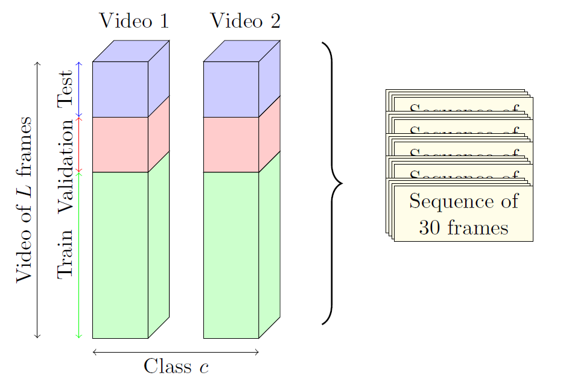

Automobile Rotation Velocity Dataset

This dataset is called "Automobile engine rotation velocity". This dataset contains 9 motor speed classes and each class contains 2 videos of 30 fps which last about 10 to 15 minutes. Each video is downsampled in time by a factor of 3, and is divided into sequences of 30 consecutive cropped frames without overlapping. This gives a dataset with around 6000 sequences of 30 consecutive frames. The dataset is split as follows: the first 60 % of each video sequence are for training, the next 20% are for validation and the remaining (20% of the video) are for testing. The following figure demonstrates a sample of the dataset:

